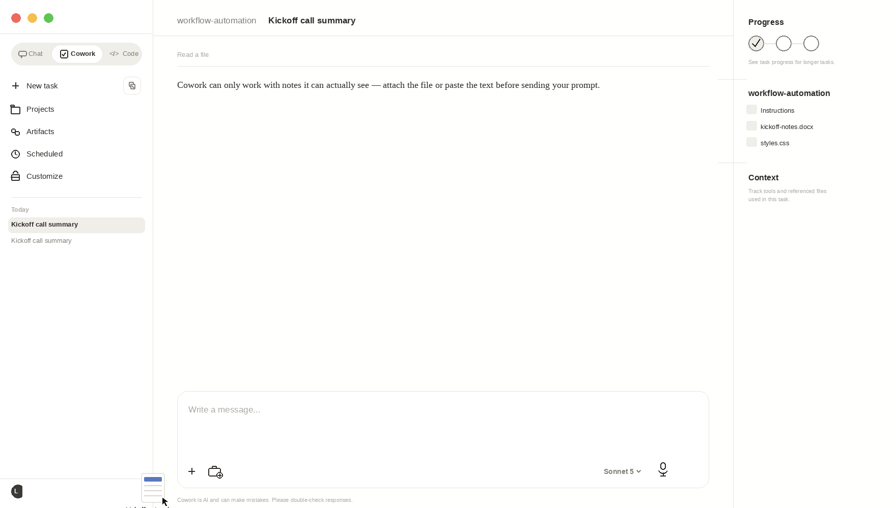
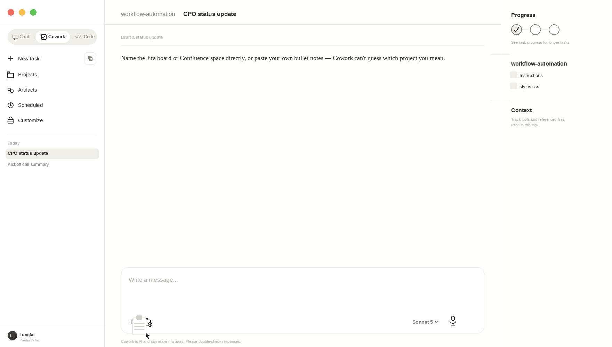
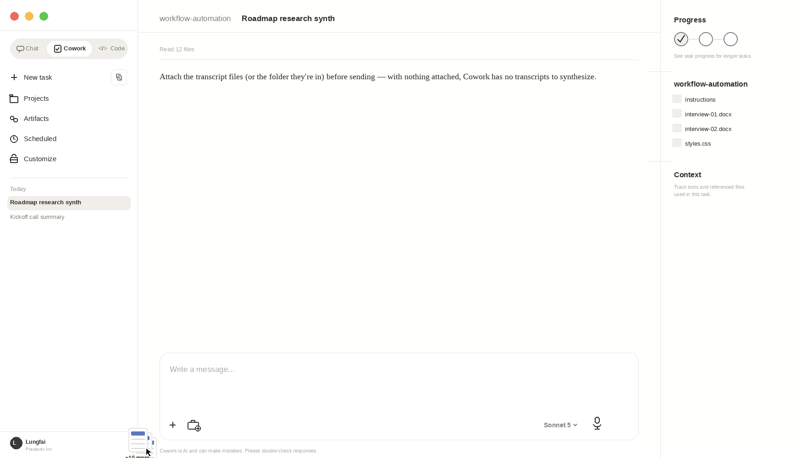

Five Cowork Workflows for Data & Product Teams
These are five workflows worth trying this month. I chose them because they map to work our Product, Data Science, ML Engineering, and Frontend teams already do, not generic "AI use cases."
The first three work with a stock Cowork setup today: paste the prompt and go. The last two need specific access, noted inline.
If you don't have that access yet, ask the Product team. Don't assume the prompt just doesn't work.
1. First-draft write-ups for partner POCs
High-stakes POCs generate a lot of documentation. Most of it starts the same way: scattered meeting notes and Slack threads that someone has to turn into something a partner can read.
Cowork can take that raw material and produce a structured first draft: what we agreed on, open questions, next steps. You tighten it instead of writing from a blank page.
This is where the time savings are largest, because the structure and polish, not the judgment calls, are the expensive part.
Needs: something to read. Cowork can't see your notes unless you attach the notes doc, paste the raw notes below the prompt, or point it at a connected folder (for example, "read the notes in [filename] in my POC folder"). A bare prompt gets you a request for the notes.
Try it — attach or paste your notes, then send this
Using the attached notes from our kickoff call with [partner], write a one-page summary: what we agreed on, open questions, and next steps.

2. Stakeholder and status updates
Weekly updates to our CPO or cross-functional stakeholders eat real time when done well. Cowork can draft one from Jira/Confluence activity, Slack threads, or your own bullet notes.
It tailors the draft to the audience: exec brief, engineering detail, or partner-facing.
Needs: the Atlassian connector, authorized in your Cowork settings, for the Jira/Confluence pull. Without it, name the specific project or page ("pull activity from the [project key] Jira board") or paste your own bullet notes into the chat.
Try it — copy into Cowork
Pull this week's activity from the [Jira project/board name] and [Confluence space], plus these bullet notes I'm pasting below, and draft this week's product status update for our CPO: what shipped, what's blocked, one decision I need from them.

3. Research synthesis for roadmap decisions
When our PM's research or support ticket themes need to feed into prioritization, Cowork can synthesize interview notes, survey responses, or ticket dumps. You get ranked themes with supporting quotes.
That's a defensible input for a roadmap conversation, not a gut call.
Needs: the transcripts. Attach the files (or the folder they're in) before sending, or point Cowork at the connected folder that holds them. With nothing attached, it will ask you for them.
Try it — attach the transcripts, then send this
Using the attached interview transcripts, synthesize them into themes ranked by frequency and impact, with a recommendation for what to prioritize next sprint.

4. Audience segment QA before delivery
Before a syndicated audience ships to a partner, someone manually eyeballs composition, size estimate, and filter logic.
Cowork can connect to our audience platform, pull an audience's definition, insights, and preview numbers, and flag anything that looks off. Three examples: a filter that silently zeroes out a segment, a size estimate that's implausible relative to the seed, or a keyword set that drifted from the original brief.
Needs: the audience platform connector. If no audience data comes back, check your connector setup before assuming the prompt is wrong.
Try it — copy into Cowork
Pull the definition and size estimate for [audience], and flag anything inconsistent with a US, 25-44, in-market description.
5. Bulk audience/segment creation and refresh
When our lead analyst or the analytics team has a list of new syndicated segments to create on our Audience Creation Platform, one-by-one in the UI doesn't scale.
Two purpose-built skills cover this. agent-new-syndicated-segments creates audiences in bulk from a Google Sheet. agent-update-syndicated-segments re-autoscales keywords on existing audiences.
Both turn an afternoon of clicking into a five-minute review-and-approve. The full write-up covers how each one works and the guardrails built in.
Needs: both segment-automation skills installed and the Claude in Chrome extension active. These drive the live platform web app, so neither works without it. Install them first, or read the full write-up before trying this one.
Try it — copy into Cowork
Create syndicated segments on the Audience Creation Platform from this sheet of names and keywords.
The bottom line
Every one of these produces a draft, not a final answer. Treat the output as a strong first pass that still needs a domain expert's review, especially anything going to a partner or leadership.
The value is compressing the blank-page problem, not removing the review step.
Further reading: the theory behind these workflows — Building Effective Agents and A Practical Guide to Building Agents on the AI Reading List.